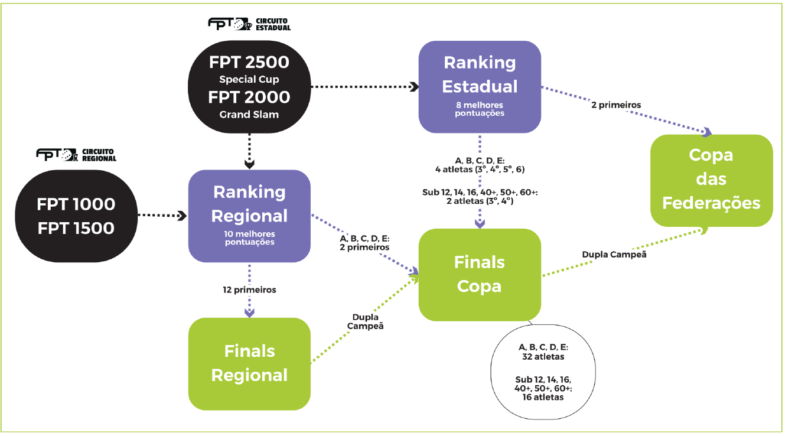

Ranking Regional
Contabiliza os 10 melhores resultados do atleta. São válidos todos os torneios que acontecerem na respectiva regional: FPT 1000, 1500, 2000 e 2500.
Federação Paranaense de Tênis
Selecione uma categoria
Classificados pelo ranking estadual
Classificados pelo ranking estadual e regional
Circuito Beach Tennis 2026

Contabiliza os 10 melhores resultados do atleta. São válidos todos os torneios que acontecerem na respectiva regional: FPT 1000, 1500, 2000 e 2500.
Contabiliza os 8 melhores resultados do atleta. São válidos todos os torneios FPT 2000 e FPT 2500.
Data prévia: 03 a 06 de setembro, em todas as regionais.
Quem joga: 12 atletas oriundos do Ranking Regional.
Para que serve: dupla campeã classifica-se para o torneio Finals Copa.
Categorias: feminino e masculino A, B, C, D, E; Sub 12, 14, 16; feminino e masculino 40+, 50+, 60+.
Data prévia: 17 a 20 de setembro, em Curitiba.
Quem joga: 2 primeiros dos rankings regionais nas categorias A, B, C, D, E; dupla campeã do Finals Regional em todas as categorias; oriundos do Ranking Estadual.
Ranking Estadual: A, B, C, D, E entram 3º, 4º, 5º e 6º. Sub 12, 14, 16, 40+, 50+ e 60+ entram 3º e 4º.
Critério técnico: A, B, C, D, E têm 4 atletas. Sub 12, 14, 16, 40+, 50+ e 60+ têm 2 atletas.
Para que serve: dupla campeã classifica-se para a Copa das Federações.
Data prévia: 17 a 21 de novembro, em Vitória/ES.
Quem joga: 4 atletas por categoria em feminino e masculino Pro, A, B, C, Sub 12, 14, 16, 18, 40+, 50+ e 60+.
Como se classificar: categorias Profissional e Sub 18 têm 4 atletas oriundos do Ranking ITF. Nas demais categorias entram os 2 primeiros do Ranking Estadual e a dupla campeã do Finals Copa.